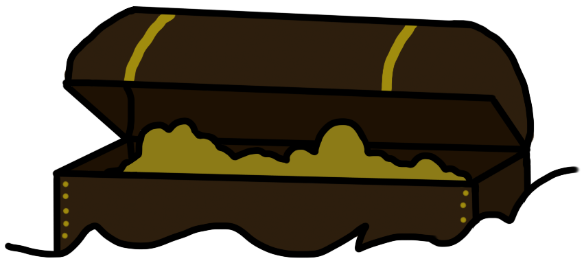
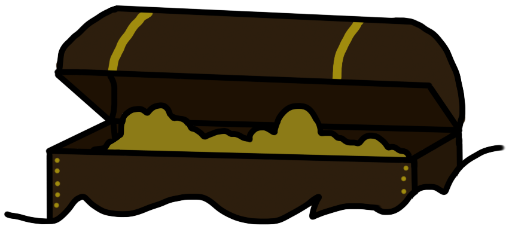
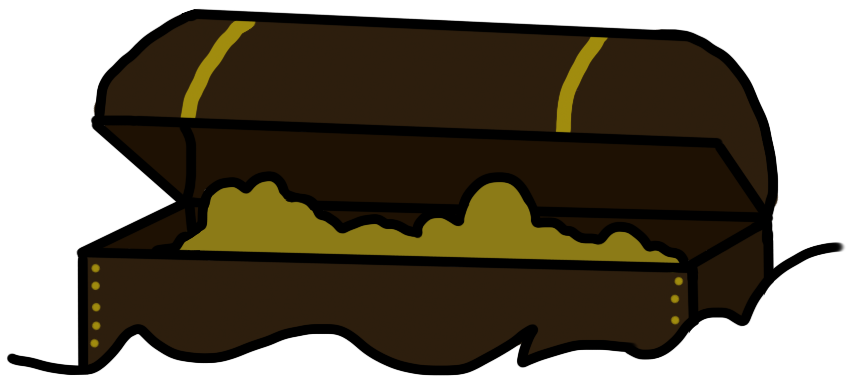
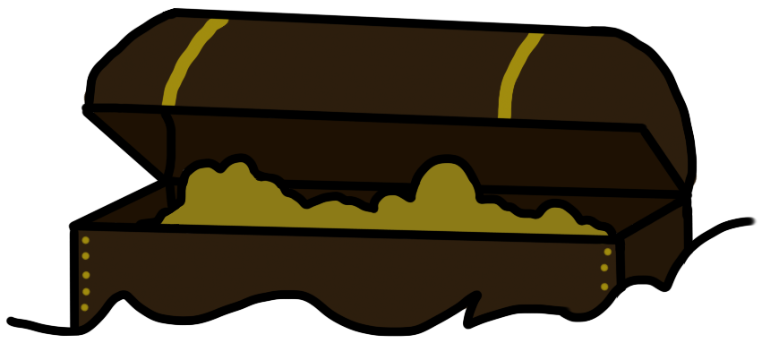

Strange Canberra


 



Many would agree that Canberra is almost infamous for our hot air balloon expeditions. Patricia Piccinini, the artist of the controversial ‘Skywhale’, has recently created a partner hot air balloon to accompany the strange air artwork. The ‘Skywhalepapa’, creatively named after the very concept of the balloon, had set abroad to the skies in 2021, ready to float alongside the original Skywhale. The first hot air balloon crafted by Piccinini had landed itself in hot water for an array of reasons, one namely being due to the appearance of the whale. One of the defining features of the Skywhale are its dangling breasts, which have been interpreted as crude rather than a reflection of motherhood and nature. Another cause for controversy was the funding for the creation of the Skywhale – Piccinini herself has stated that $300,000 worth of tax funds contributed towards the notorious Skywhale. This had caused a public disapproval of the balloon during its initial debut around 2013. However, many Canberrans have accepted Piccinini’s strange but intriguing works as unique to the Capital’s history and culture and will remain a strange document of Canberra’s past.
The Telstra Tower is one of Canberra’s most iconic landmarks. Initially known as the ‘Telecom Tower’ (Pianegonda, 2018), this tower was created to primarily take over from the inadequate communication systems utilised in Canberra. The tower – famously known as the Telstra Tower – became a revenue for tourist profit, as it attracts around two-thousand visitors per year. Not only did the attraction offer conference rooms, a restaurant and a kiosk, but the Telstra Tower and a looming landmark that is visible on the horizon, making it one of the most memorable symbols of the Capital yet. However, the tower did not come without a strange occurrence. In the carpark of the tower is a sign warning that the security of your vehicle may be affected by being remote to the attraction. There have been visitors who claim that they have been locked out of their own cars, or the contrary where they have not been able to lock their door at all. Elise Pianegonda (2018), the author of an article addressing these strange happenings, claimed that when they had attempted to open the door manually, the vehicle’s alarms were set off. This can only be stopped by the security guards of the tower, who have a method to fix the visitors’ problems. This is caused by the extremely strong transmissions the Telstra Tower emits, as these transmissions have the possibility to interfere with your car’s security. Canberra’s most famous broadcasting tower is therefore riddled with strange occurrences, and perhaps it is safer to ride a bike to the Telstra Tower instead.
While the Capital is relatively young, that does not mean it is without a haunted past. The famous heritage building, Blundell’s Cottage, is riddled with conspiracy and history. It was constructed during the 1870’s, and in 1874, George and Flora Blundell, the family of which the cottage was named after, had moved in. In 1892, eighteen years since their arrival at the home, Flora had unfortunately passed from tragic circumstances – whilst ironing on a winter night, her nightgown had caught on fire by the nearby fireplace, leading to her untimely death. Although George had passed sixteen years after the death of his wife, it is Flora that visitors claim to see or envision at Blundell’s Cottage. There have been claims that individuals have spotted a shadow-like figure lurking the building, whereas others have said they had caught a smell akin to something burning, telling of Mrs Blundell’s tragic passing. It is thus fair to say that the cottage has its share of both morbid and cultural history. This is why the Canberra and District Historical Society (CDHS) claimed custodianship over the lot, who has thence turned it into a museum and attraction. This 19th Century cottage is Canberran heritage filled with ghosts of the past.

Lake Burley Griffin is a magnet for the strange and bizarre. Rowan Jeffs, a scuba diver attempting to navigate the murky bottoms of Canberra’s iconic lake, stated that “‘If I put my hand in, it'll sink to my elbow - so who knows what's buried under there,’” (as cited in ABC News, 2017), exposing the mysterious implications of what lurks underneath the mud. Nonetheless, scuba divers made their expeditions into the lake to uncover any treasure or ominous rarities they could find. However, they weren’t the only ones searching Burley Griffin; Sergeant Cunningham expresses the Australian Federal Police’s desire to utilise sonar technology to scour the lake for bodies and abandoned cars. It was estimated that the police remove two bodies from the lake on average, as stated by Sergeant Cunningham (as cited in ABS News, 2017). However, with the use of advanced sonar technology, they have been able to discover evidence such as wallets, weapons and clothing that have consequently reopened numerous cases. While not all diving-finds lead to Canberran mysteries, it is safe to wonder what is lurking underneath the muddy layers of Burley Griffin, and what awaits the Federal Police as they expand their search through sonar.